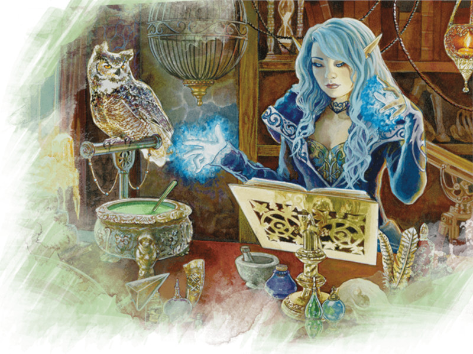

Collège de la vaillance
Les bardes du collège de la vaillance chantent des chansons sur des héros du passé et se battent pour créer de nouvelles légendes dans le présent. Comme des poètes guerriers et des skalds vikings d'autrefois, vos vers inspirent vos camarades vers des sommets vertigineux de gloire et de prouesses martiales.
Capacités du collège de la vaillance
Lorsque les bardes se réunissent pour partager des histoires et développer de nouveaux versets, ils appellent leur rassemblement un collège. Ce lien de camaraderie peut être appliqué librement à tous les bardes qui suivent une tradition similaire. Les bardes qui chantent des chansons et racontent des histoires d'héroïsme suivent les traces de l'archétype du collège de la vaillance. Ces bardes acquièrent plusieurs caractéristiques qui en font des combattants et des alliés solides. Le barde gagne quatre capacités de sous-classe aux niveaux 3, 6 et 14. En résumé, ces capacités de sous-classe permettent :
- D'acquérir la maîtrise des armures intermédiaires, des boucliers et des armes de guerre, vous permettant de combattre en première ligne.
- D'inspirer vos alliés au combat en leur permettant de dépenser vos dés d'Inspiration bardique dans le feu de l'action.
- D'attaquer plus d'une fois par tour, ce qui fait de vous un combattant plus dangereux.
- De tisser une bravade martiale dans vos sorts, ce qui vous permet de lancer une attaque au corps à corps lorsque vous lancez un sort de barde.
Avantages du collège de la vaillance
Le collège de la vaillance est l'une des meilleures options mais aussi parmi les moins appréciées du Manuel des Joueurs pour ceux qui cherchent à jouer un personnage qui se bat avec un mélange de sorts et de jeux d'épée. Bien que la liste de sorts du barde soit largement adaptée à l'interaction sociale, cela peut en fait être une bénédiction déguisée. La liste des sorts de barde n'est pas conçue pour le combat, mais elle contient tout de même quelques puissants sots offensifs comme murmures dissonants, métal brûlant et force fantasmagorique.
Et ce ne sont que des sorts qui infligent des dégâts ! La liste des sorts de barde regorge d'options axées sur le combat comme fléau, mot de guérison et immobilisation de personne. Ce n'est pas parce que ces sorts n'infligent pas de dégâts qu'ils ne peuvent pas aider votre groupe en affaiblissant les ennemis ou en soutenant les alliés dans le vif du sujet. Et si vous avez encore besoin de plus d'explosion pour compléter votre arsenal, vous pouvez apprendre deux sorts à partir des listes de sorts des autres classes chaque fois que vous gagnez la capacité Secrets magiques aux niveaux 10, 14 et 18.
De plus, la véritable force de la liste de sorts du barde réside dans sa diversité. Elle est peuplée d'un large éventail de sorts offensifs, défensifs, de soutien et sociaux, permettant aux joueurs d'un barde d'en faire des guerriers socialement avertis qui sont tout aussi efficaces dans et hors du champ de bataille. Laissez votre sous-classe vous permettre d'être un guerrier courageux et appuyez-vous sur les capacités et les sorts de votre classe pour le reste de votre pouvoir.
Inconvénients du collège de la vaillance
Le plus grand inconvénient d'être un touche-à-tout est d'être un maître en rien. Bien que vous puissiez être un puissant combattant à l’épée et lanceur de sorts avec cette sous-classe, vous ne serez jamais un guerrier aussi puissant (ou aussi bien armé) qu'un guerrier champion, et vos sorts ne seront jamais aussi puissants que ceux d'un magicien de l'école d'évocation. Ce qui rend un barde du collège de la vaillance puissant, c'est la diversité des options qui s'offrent à lui. Si vous n'êtes pas d'humeur à jouer avec tous ces jouets, vous trouverez peut-être que votre personnage est moins puissant (mais pas nécessairement moins amusant à jouer) que les personnages qui sont plus singulièrement concentrés.
Vous êtes également confronté au problème de la dépendance multi-caractéristiques, car votre classe s'appuie sur la Force, la Dextérité, la Constitution et le Charisme en tant que caractéristiques importantes. La Force vous permet d'utiliser efficacement les armes de corps à corps, la Dextérité améliore votre classe d'armure en armure intermédiaire, la Constitution vous aide à supporter les attaques en première ligne et le Charisme alimente vos sorts. Si vous souhaitez utiliser des armes avec la propriété finesse, comme les rapières, vous pouvez en toute sécurité baisser votre Force pour renforcer les trois autres, mais c'est une proposition délicate. Alternativement, vous pouvez investir dans le don Amateur des armures lourdes pour vous parer d'une armure lourde et réduire votre Dextérité en toute sécurité, mais cela implique l'investissement d'un don, ce que les guerriers lanceurs de sorts comme les paladins n'ont pas à faire.
Le don supplémentaire accordé au niveau 1 par la variante de la race humaine peut sembler être un bon moyen de compenser cette « taxe de don », de sorte que vous pouvez gagner le don Amateur des armures lourdes plus tôt, sans avoir à sacrifier une Amélioration de caractéristiques, mais cela ne fonctionne pas si appliquez strictement les règles du jeu car vous ne maîtrisez les armures intermédiaires qu'à partir du niveau 3, et comme vous devez les maîtriser pour obtenir le don Amateur des armures lourdes, cela ne peut être possible avant le niveau 4. Si vous jouez avec des règles maison, vous pourrez par contre peut-être convaincre votre MD d'ignorer les prérequis du don et d'avoir la maîtrise des armures lourdes dès le début du jeu, ou de vous laisser choisir le don Amateur des armures lourdes au niveau 1 mais de n'en gagner les avantages que plus tard au niveau 3, quand vous aurez rempli les prérequis.
Aucune des deux options ne déséquilibre considérablement le jeu, bien que vous aurez du mal à trouver suffisamment d'or pour acheter une armure lourde au niveau 1.
Exemple de personnage
Comme la plupart des classes de D&D, le barde ne choisit sa sous-classe qu'au niveau 3. Si vous jouez un barde du niveau 1 et pensez que vous allez suivre le collège de la vaillance plus tard, vous devez choisir une race qui améliore votre Charisme et votre Force, votre Dextérité ou votre Constitution. Cela inclut la race de drakéide, qui booste la Force et dans une moindre mesure le Charisme, le demi-elfe, qui donne un gros bonus en Charisme et deux petits bonus que vous pouvez attribuer où vous le souhaitez, et le tieffelin.
Comme d'habitude, le background de votre personnage dépend de vous. Vous pouvez trouver toutes sortes d'histoires intéressantes et de personnages étranges en associant des historiques improbables à votre classe. Êtes-vous un artiste itinérant depuis votre naissance ? Ou étiez-vous un soldat qui a commencé à jouer du tambour et du fifre lors d'une campagne militaire et a trouvé votre véritable vocation ?
Pour le choix de l'équipement, comme vous ne maîtrisez pas les armes de guerre et les armures intermédiaires avant le niveau 3, choisissez l'équipement par défaut. Vous ferez votre shopping plus tard.
Sorts
Lorsque vous choisissez vos sorts au niveau 1, vous définirez le rôle que votre barde jouera au sein du groupe. Contrairement à d'autres classes de lanceur de sorts, une fois qu'un barde apprend un sort, il le connaît pour toujours. Et vous apprenez un nouveau sort de barde chaque fois que vous montez de niveau (plus ou moins). Et vous pouvez « échanger » un sort connu contre un autre de votre liste de sorts lorsque vous gagnez un niveau. Et cela ne tient pas compte des quatre sorts qu'un barde du collège de la vaillance gagnera grâce à ses Secrets magiques. C'est en fait une tonne de sorts, alors ne vous inquiétez pas trop pour votre décision.
Choisissez les deux sorts mineurs qui vous plaisent (l'un d'entre eux devrait toutefois être moquerie cruelle car il est très emblématique) et quatre sorts de niveau 1 parmi ceux proposés dans la liste ci-dessous. Essayez de choisir un sort de soutien, un sort défensif, un sort social et le dernier selon vos préférences. Cette liste n'est toutefois là que pour vous aider à démarrer si vous jouez un barde du collège du savoir pour la première fois. Avec l'expérience, vous pouvez bien entendu choisir parmi d'autres sorts.
- Fléau (défensif)
- Charme-personne (social)
- Soins (soutien)
- Déguisement (social)
- Murmures dissonants (offensif)
- Lueurs féeriques (soutien)
- Fou rire de Tasha (défensif)
- Image silencieuse (social)
- Sommeil (défensif)
- Vague tonnante (offensif)
Dons
Une fois que vous avez atteint 18 ou 20 en Force, Dextérité et Charisme, vous pouvez augmenter votre puissance offensive ou défensive avec quelques dons. Ceux qui suivent sont de bons choix pour les bardes du collège de la vaillance.
Amateur des armures lourdes. Si vous voulez vous concentrer sur les combats en première ligne et que vous avez suffisamment investi en Force pour supporter une armure lourde, le don Amateur des armures lourdes vous donnera la maîtrise de l'armure que vous désirez. Enfiler une armure lourde et combattre en première ligne vous offre le meilleur de tous les mondes : l'attaque et la défense physique d'un guerrier et l'incroyable puissance d'incantation d'un magicien.
Mage de guerre. Si vous allez être en première ligne, vous voudrez ce don. Un avantage aux jets de sauvegarde pour maintenir la concentration est incroyable ; le reste est juste un plus.
Maîtres des armes à deux mains. Si vous avez investi sur la Force au détriment de la Dextérité et que vous souhaitez utiliser d'énormes armes en première ligne, ce donc est pour vous.
Meneur exhalant. Ce don est parfait pour un barde courageux, surtout si vous êtes devenu de facto le chef de votre groupe.
Résistant. Gagner la maîtrise des jets de sauvegarde de Constitution est excellent, d'autant plus que vous gagnez également un bonus de +1 en Constitution ! Vous pouvez choisir ce don ou Mage de guerre, les deux sont excellents.
Tueur de mages. Si vous vous retrouvez face à beaucoup de lanceurs de sorts dans votre campagne, ce don se marie bien avec vos autres capacités de combat.

Basé sur un article de James Haeck, traduit par glooping et blueace